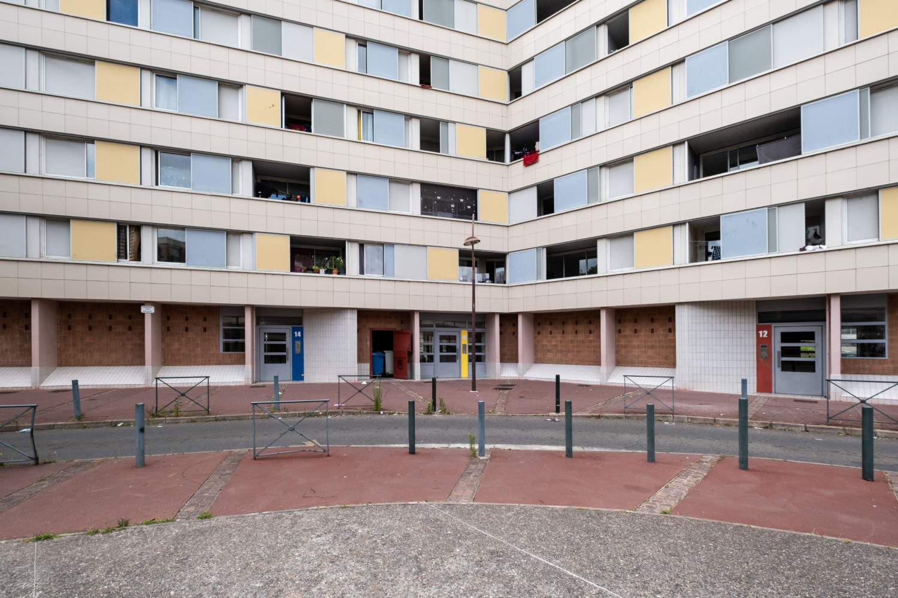
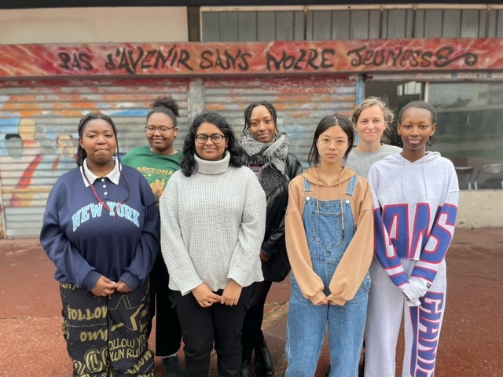

Nacera Belaza, chorégraphe
Série Parkours, coproduite par le Bondy Blog et la MC93 de Bobigny. Portraits filmés d'artistes qui font dialoguer la scène et les quartiers populaires.
Série Parkours, coproduite par le Bondy Blog et la MC93 de Bobigny. Portraits filmés d'artistes qui font dialoguer la scène et les quartiers populaires.

Depuis plusieurs semaines, Ebony et Franck, candidats de la nouvelle saison de la Star Academy, font face à des vagues de commentaires racistes et misogynes sur les réseaux sociaux, au point de pousser TF1 et Endemol à réagir par un communiqué. À la veille de la demi-finale, Coralie Chovino fait le point avec Yannis Kingston sur cette polémique qui secoue le télé-crochet.
Reportages de terrain, décryptages, formats courts pensés pour le mobile et les réseaux. Écriture, tournage et montage de bout en bout.
Avec l'équipe EMI du Bondy Blog et La ZEP, j'accompagne des cycles d'ateliers auprès de jeunes et d'habitants des quartiers populaires : podcast, photo argentique, journal de quartier, vidéo. Reportages et textes produits avec les participants.

Un texte écrit avec des jeunes du quartier, qui racontent leur territoire à hauteur d'habitants, loin des clichés sur la banlieue.

Des jeunes mènent l'enquête, réalisent des interviews et produisent leurs vidéos autour des Jeux olympiques et de leur quartier.
Je suis journaliste indépendante, spécialisée en vidéo mobile (mojo).
Je conçois des formats courts, pensés pour le mobile et les réseaux sociaux, avec une attention particulière portée au rythme, à l'image et à la parole captée sur le terrain. J'utilise le smartphone comme un outil complet, léger et réactif, au service d'un journalisme accessible et sensible aux réalités sociales.
Je travaille actuellement comme pigiste pour HerStory et L'Étudiant. Formée à l'Institut Pratique du Journalisme (IPJ, PSL), j'ai affiné mes compétences en vidéo, montage, écriture et narration au sein du Bondy Blog, pour qui je continue à produire.
Je m'intéresse aux phénomènes de société, aux territoires ultramarins, à la pop culture et à la télé-réalité.